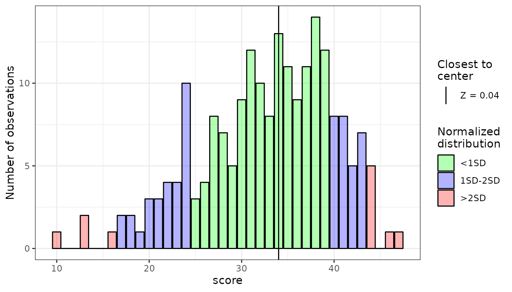
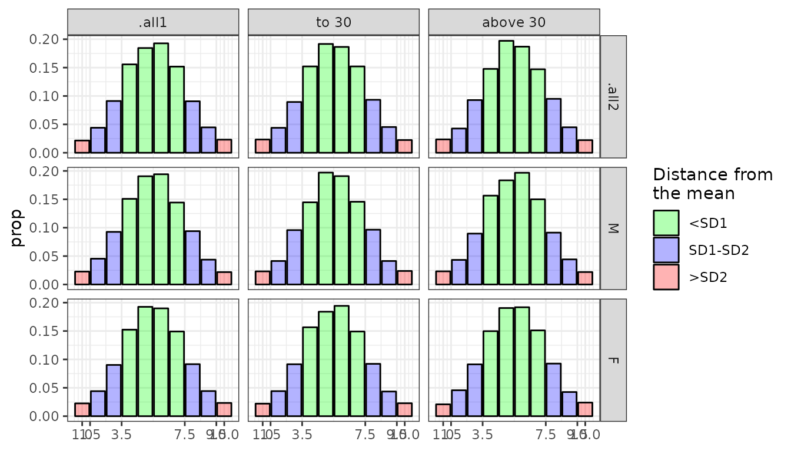
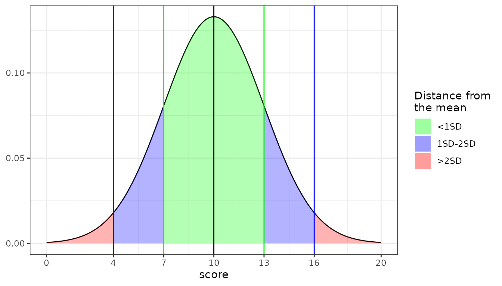
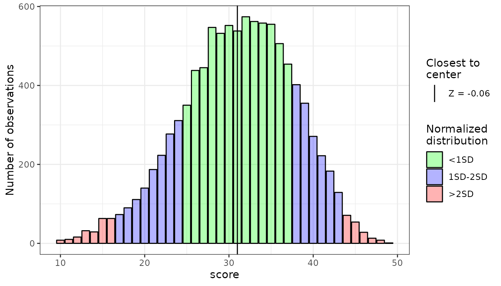

stenR usage
usage.RmdstenR is a package tailored mainly for users and creators of psychological questionnaires, though other social science researchers and survey authors can benefit greatly from it.
It provides tools to help with processes necessary for conducting such studies:
- processing data from raw item scores to raw factor/scale scores
- standardization of the raw scores into standard scale of your choosing, either by:
- normalization of the raw scores using frequency table (if no norms have been developed before). Usually for authors of questionnaires or their adaptations.
- importing scoring table developed by questionnaire authors - for researchers only using the measure
Furthermore, tools for developing or using norms on grouped basis are also provided (up to two intertwined grouping conditions are supported).
As there are few fairly independent and varied processes supported in the stenR, they will be described separately below. For more details, browse through documentation and other vignettes.
library(stenR)
#> This is version 0.6.9 of stenR package.
#> Visit https://github.com/statismike/stenR to report an issue or contribute. If you like it - star it!Processing raw item scores to raw factor/scales
After conducting the study, results will be usually available in form of responses in some scoring scale for each separate items. For further analysis they need to be gathered into scales and factors (unless they are one-item scale).
stenR provides functions to make this process straightforward.
We will use one of the datasets provided with the package: SLCS, containing responses for items in Self-Liking Self-Competence Scale. It consists of 16 items, which can be grouped into two subscales (Self-Liking, Self-Competence) and General Score.
str(SLCS)
#> 'data.frame': 103 obs. of 19 variables:
#> $ user_id: chr "damaged_kiwi" "unilateralised_anglerfish" "technical_anemonecrab" "temperate_americancurl" ...
#> $ sex : chr "M" "F" "F" "F" ...
#> $ age : int 30 31 22 26 22 17 27 24 20 19 ...
#> $ SLCS_1 : int 4 5 4 5 5 5 5 4 4 5 ...
#> $ SLCS_2 : int 2 2 4 3 2 3 1 5 2 1 ...
#> $ SLCS_3 : int 1 2 4 2 3 1 1 4 1 2 ...
#> $ SLCS_4 : int 2 1 4 2 4 2 1 4 4 2 ...
#> $ SLCS_5 : int 2 2 4 1 2 2 2 4 2 2 ...
#> $ SLCS_6 : int 4 4 5 5 5 5 1 2 5 4 ...
#> $ SLCS_7 : int 4 4 4 5 3 5 2 3 5 3 ...
#> $ SLCS_8 : int 4 5 4 5 4 5 5 4 4 5 ...
#> $ SLCS_9 : int 2 3 2 1 3 1 1 4 1 1 ...
#> $ SLCS_10: int 4 4 3 4 4 4 5 4 5 5 ...
#> $ SLCS_11: int 1 1 2 1 1 2 1 3 1 1 ...
#> $ SLCS_12: int 4 2 4 3 3 2 2 4 3 1 ...
#> $ SLCS_13: int 4 5 5 4 3 4 4 4 5 5 ...
#> $ SLCS_14: int 2 1 3 2 4 1 1 4 1 1 ...
#> $ SLCS_15: int 5 4 4 4 4 3 3 2 5 4 ...
#> $ SLCS_16: int 4 5 5 4 5 4 5 5 5 5 ...To summarize scores we need to create ScaleSpec objects with ScaleSpec() constructor function. Such objects contain instructions for R how the scales are structured, most importantly:
- name: name of the resulting variable
- item_names: names of variables which will be summed to the scale
- reverse: names of the variables that need to have their scores reversed
- min, max: absolute min and max of raw scores
SL_spec <- ScaleSpec(
name = "SelfLiking", min = 1, max = 5,
item_names = c("SLCS_1", "SLCS_3", "SLCS_5", "SLCS_6", "SLCS_7",
"SLCS_9", "SLCS_11", "SLCS_15"),
reverse = c("SLCS_1", "SLCS_6", "SLCS_7", "SLCS_15")
)
SC_spec <- ScaleSpec(
name = "SelfCompetence", min = 1, max = 5,
item_names = c("SLCS_2", "SLCS_4", "SLCS_8", "SLCS_10", "SLCS_12",
"SLCS_13", "SLCS_14", "SLCS_16"),
reverse = c("SLCS_8", "SLCS_10", "SLCS_13")
)If there are main factors or factors of higher level, the ScaleSpec objects can be also combined into CombScaleSpec object with CombScaleSpec() constructor function. In our example the General Score is such factor.
GS_spec <- CombScaleSpec(
name = "GeneralScore",
SL_spec, SC_spec
)
# subscales can be also reversed
GS_with_rev <- CombScaleSpec(
name = "rev_example",
SL_spec, SC_spec,
reverse = "SelfCompetence"
)When all scale specifications are ready, they can be then used to get the factor/scale data, summarized in accordance to the instructions in provided ScaleSpec or CombScaleSpec objects.
summed_SCLS <- sum_items_to_scale(
SLCS,
SL_spec,
SC_spec,
GS_spec,
GS_with_rev
)
str(summed_SCLS)
#> 'data.frame': 103 obs. of 4 variables:
#> $ SelfLiking : int 13 15 19 10 16 12 18 28 10 14 ...
#> $ SelfCompetence: int 20 15 26 19 25 17 14 28 19 13 ...
#> $ GeneralScore : int 33 30 45 29 41 29 32 56 29 27 ...
#> $ rev_example : int 41 48 41 39 39 43 52 48 39 49 ...Normalize scores with FrequencyTable
For the times when you have great number of observations and prefer to develop norms (usually, when you are creator of questionnaire or its adaptation) it is recommended to generate FrequencyTable and ScoreTable objects. Resulting ScoreTable objects can be either used to normalize the scores or create exportable to non-R specific objects ScoringTable object.
There are also support for automatic grouping the observations using GroupedFrequencyTable and GroupedScoreTable objects. They will be mentioned in Grouping section.
We will use one of the datasets provided with the package: HEXACO_60, containing raw scores of scales in HEXACO 60-item questionnaire.
str(HEXACO_60)
#> 'data.frame': 204 obs. of 9 variables:
#> $ user_id: chr "neutral_peregrinefalcon" "trapeziform_zebradove" "polyhedral_solenodon" "decrepit_norwayrat" ...
#> $ sex : chr "F" "F" "F" "F" ...
#> $ age : int 26 24 26 25 31 25 62 19 24 26 ...
#> $ HEX_H : int 42 38 18 21 32 34 37 39 41 30 ...
#> $ HEX_E : int 33 31 17 24 35 30 37 13 33 24 ...
#> $ HEX_X : int 34 36 16 29 24 34 39 27 23 34 ...
#> $ HEX_A : int 36 44 42 22 31 34 23 27 15 21 ...
#> $ HEX_C : int 36 36 35 43 34 28 41 19 49 38 ...
#> $ HEX_O : int 31 28 37 47 28 39 44 42 22 38 ...-
Create FrequencyTable objects
At first, we need to create a FrequencyTable object for each variable using
FrequencyTable()constructor function.HEX_C_ft <- FrequencyTable(HEXACO_60$HEX_C) HEX_E_ft <- FrequencyTable(HEXACO_60$HEX_E) #> ℹ There are missing raw score values between minimum and maximum raw scores. #> They have been filled automatically. #> No. missing: 5/38 [13.16%]If there are some missing raw scores in your data, helpful message will be displayed. You can check how the frequencies look like using
plot()function.plot(HEX_E_ft)
As we can see, the missing values are gathered near tails of the distribution. It can happen even with many observations - and in case of our sample (103 observations) it is very likely.
-
Create ScoreTable objects
ScoreTable object is basically a frequency table with additional standard scale specification attached. We can create our own specification using
StandardScale(), but we will use in the example already providedSTEN(Standard TEN) score specificationHEX_C_st <- ScoreTable( ft = HEX_C_ft, scale = STEN ) HEX_E_st <-ScoreTable( ft = HEX_E_ft, scale = STEN ) -
Normalize and standardize scores
Created ScoreTables can be then used to calculate the normalized scores. Normalization can be done either on individual vectors with basic
normalize_score()function:HEX_C_norm <- normalize_score( HEXACO_60$HEX_C, table = HEX_C_st, what = "sten" ) HEX_E_norm <- normalize_score( HEXACO_60$HEX_E, table = HEX_E_st, what = "sten" ) summary(HEX_C_norm) #> Min. 1st Qu. Median Mean 3rd Qu. Max. #> 1.000 4.000 5.000 5.495 7.000 10.000 summary(HEX_E_norm) #> Min. 1st Qu. Median Mean 3rd Qu. Max. #> 1.000 4.000 6.000 5.539 7.000 10.000Or using the convienient wrapped for whole data.frame
HEX_CE_norm <- normalize_scores_df( data = HEXACO_60, vars = c("HEX_C", "HEX_E"), HEX_C_st, HEX_E_st, what = "sten", # by default no other variables will be retained retain = FALSE ) summary(HEX_CE_norm) #> HEX_C HEX_E #> Min. : 1.000 Min. : 1.000 #> 1st Qu.: 4.000 1st Qu.: 4.000 #> Median : 5.000 Median : 6.000 #> Mean : 5.495 Mean : 5.539 #> 3rd Qu.: 7.000 3rd Qu.: 7.000 #> Max. :10.000 Max. :10.000 str(HEX_CE_norm) #> 'data.frame': 204 obs. of 2 variables: #> $ HEX_C: num 6 6 5 8 5 3 7 1 10 6 ... #> $ HEX_E: num 5 5 2 3 6 5 6 1 5 3 ...
Normalize scores using imported ScoringTable
Most users will be using already developed norms by the creators of questionnaire. Scoring tables should be provided in the measure documentation, and ScoringTable object is mirroring their usual representation.
ScoringTable object can be either created from ScoreTable or GroupedScoreTable object or imported from csv or json file.
For manual creation, the csv format is recommended. Such file should look similar to the one below (which is created on basis of Consciousness ScoreTable from code in section above)
"sten","Score"
1,"10-19"
2,"20-25"
3,"26-28"
4,"29-31"
5,"32-35"
6,"36-39"
7,"40-42"
8,"43-46"
9,"47-48"
10,"49-50"- first column should contain the standardized scores
- second column should contain the raw scores in pattern of
{min}-{max}that need to be changed into each standardized score
ScoringTable objects also supports different groups of observations - in that case 2nd to n-th columns are reflecting scores for each of the group. They will be mentioned in Grouping section.
We can import ScoringTables using import_ScoringTable() function.
HEX_C_Scoring <- import_ScoringTable(
source = C_ScoringTable,
method = "csv"
)
HEX_E_Scoring <- import_ScoringTable(
source = E_ScoringTable,
method = "csv"
)
summary(HEX_C_Scoring)
#> <ScoringTable>
#> No. groups: ungrouped
#> Scale: "sten"; `min`: 1; `max`: 10
summary(HEX_E_Scoring)
#> <ScoringTable>
#> No. groups: ungrouped
#> Scale: "sten"; `min`: 1; `max`: 10They can be then used to normalize scores, very similarly to normalize_scores_df:
HEX_CE_norm <- normalize_scores_scoring(
data = HEXACO_60,
vars = c("HEX_C", "HEX_E"),
HEX_C_Scoring,
HEX_E_Scoring
)
summary(HEX_CE_norm)
#> HEX_C HEX_E
#> Min. : 1.000 Min. : 1.000
#> 1st Qu.: 4.000 1st Qu.: 4.000
#> Median : 5.000 Median : 6.000
#> Mean : 5.495 Mean : 5.539
#> 3rd Qu.: 7.000 3rd Qu.: 7.000
#> Max. :10.000 Max. :10.000
str(HEX_CE_norm)
#> 'data.frame': 204 obs. of 2 variables:
#> $ HEX_C: num 6 6 5 8 5 3 7 1 10 6 ...
#> $ HEX_E: num 5 5 2 3 6 5 6 1 5 3 ...Groupings
Very often the norms are different for different groups: most often varying in some demographic variables, like biological sex or biological age. stenR functions provide support for such groups by intoducing Grouped variants of FrequencyTable and ScoreTable (regular ScoringTable supports them) and GroupConditions class.
GroupConditions works similarly to ScaleSpec and CombScaleSpec objects: it provides information about how to assign observations. They need the name of category (mainly for informative reasons) and conditions following the syntax of name of the group on the LHS and boolean condition on the RHS.
sex_grouping <- GroupConditions(
conditions_category = "Sex",
"M" ~ sex == "M",
"F" ~ sex == "F"
)
age_grouping <- GroupConditions(
conditions_category = "Age",
"to 30" ~ age < 30,
"above 30" ~ age >= 31
)
sex_grouping
#> <GroupConditions>
#> Conditions category: Sex
#> Tested variables: "sex"
#> 2 Groups:
#> • M IF: sex == "M"
#> • F IF: sex == "F"
#> Forced disjointedness by default: TRUE
#> Forced exhaustiveness by default: FALSE
age_grouping
#> <GroupConditions>
#> Conditions category: Age
#> Tested variables: "age"
#> 2 Groups:
#> • to 30 IF: age < 30
#> • above 30 IF: age >= 31
#> Forced disjointedness by default: TRUE
#> Forced exhaustiveness by default: FALSEThey can be then used to create a GroupedFrequencyTable, and following that: GroupedScoreTable and, optionally, ScoringTable - or to create ScoringTable during import.
For this examples we will be using IPIP_NEO_300 dataset provided with the package. It contains the age and sex variables, and summed raw scores of 5 scales from IPIP NEO questionnaire (300 item version).
str(IPIP_NEO_300)
#> 'data.frame': 13161 obs. of 7 variables:
#> $ sex: chr "F" "F" "F" "M" ...
#> $ age: int 25 18 16 23 25 26 23 66 19 36 ...
#> $ N : int 187 209 209 167 163 193 NA 95 251 NA ...
#> $ E : int NA 222 165 176 195 145 229 174 NA 194 ...
#> $ O : int 234 224 197 180 209 243 237 198 NA 266 ...
#> $ A : int 221 178 224 182 243 231 234 269 NA 184 ...
#> $ C : int 234 178 224 224 217 219 232 235 176 NA ...-
GroupedFrequencyTable, GroupedScoreTable and ScoringTable export
Workflow is very similiar to the ungrouped tables.
N_gft <- GroupedFrequencyTable( data = IPIP_NEO_300, conditions = list(age_grouping, sex_grouping), var = "N", # By default, norms are are also computed for '.all' groups. These are # used if by any reason observation can't be assigned to any group # in corresponding condition category .all = TRUE ) #> ℹ There are missing raw score values between minimum and maximum raw scores for #> some groups. They have been filled automatically. #> • to 30:M No. missing: 8/214; 3.74% #> • to 30:F No. missing: 28/220; 12.73% #> • to 30:.all2 No. missing: 14/230; 6.09% #> • above 30:M No. missing: 16/220; 7.27% #> • above 30:F No. missing: 19/213; 8.92% #> • above 30:.all2 No. missing: 14/224; 6.25% #> • .all1:M No. missing: 6/221; 2.71% #> • .all1:F No. missing: 12/220; 5.45% #> • .all1:.all2 No. missing: 6/230; 2.61% N_gst <- GroupedScoreTable(N_gft, scale = STEN) plot(N_gst)GroupedScoreTable can be then used to normalize scores using
normalize_scores_grouped(). By default, other variables are not retained. You can also provide column name to contain the assigned group names per observation.NEO_norm <- normalize_scores_grouped( data = IPIP_NEO_300, vars = "N", N_gst, what = "sten", group_col = "Group" ) str(NEO_norm) #> Classes 'data.table' and 'data.frame': 13161 obs. of 2 variables: #> $ Group: chr "to 30:F" "to 30:F" "to 30:F" "to 30:M" ... #> $ N : num 6 7 7 6 5 7 NA 2 9 NA ... table(NEO_norm$Group) #> #> .all1:F .all1:M above 30:F above 30:M to 30:F to 30:M #> 172 176 2955 2951 3419 3488GroupedScoreTable can be then transformed into ScoringTable and exported to csv or json file.
ST_csv <- tempfile(fileext = ".csv") cond_csv <- tempfile(fileext = ".csv") N_ST <- to_ScoringTable( table = N_gst, min_raw = 60, max_raw = 300 ) summary(N_ST) #> <ScoringTable> #> No. groups: 10 #> Scale: "sten"; `min`: 1; `max`: 10 #> GroupConditions: 2 #> 1. Category: Age #> • Tested vars: "age" #> • No. groups:: 2 #> 2. Category: Sex #> • Tested vars: "sex" #> • No. groups:: 2 #> .all groups included: TRUE export_ScoringTable( table = N_ST, out_file = ST_csv, method = "csv", # you can also export GroupConditions to seperate csv file cond_file = cond_csv ) -
ScoringTable import from file
To import ScoringTable with groups from csv, it needs to look accordingly:
sten,to 30:M,to 30:F,to 30:.all2,above 30:M,above 30:F,above 30:.all2,.all1:M,.all1:F,.all1:.all2 1,60-94,60-111,60-101,60-85,60-98,60-92,60-90,60-104,60-95 2,95-110,112-128,102-117,86-101,99-112,93-106,91-106,105-119,96-111 3,111-126,129-144,118-134,102-117,113-128,107-122,107-122,120-136,112-128 4,127-143,145-162,135-152,118-135,129-146,123-140,123-140,137-154,129-147 5,144-162,163-180,153-171,136-154,147-165,141-160,141-159,155-174,148-166 6,163-181,181-199,172-190,155-175,166-185,161-180,160-179,175-194,167-186 7,182-201,200-218,191-210,176-198,186-208,181-203,180-200,195-214,187-208 8,202-222,219-238,211-232,199-222,209-229,204-226,201-222,215-234,209-229 9,223-244,239-256,233-251,223-245,230-247,227-247,223-245,235-251,230-248 10,245-300,257-300,252-300,246-300,248-300,248-300,246-300,252-300,249-300Usually measure developers don’t include norms for observations with unmet conditions (groups with
.allnames instenRconvention). ScoringTable constructed without these groups will produceNAduringnormalize_scores_scoring()when observation isn’t matching condition provided (that’s whyGroupedFrequencyTable()generates these groups them by default). In that case the csv file would be smaller:sten,to 30:M,to 30:F,above 30:M,above 30:F 1,60-94,60-111,60-85,60-98 2,95-110,112-128,86-101,99-112 3,111-126,129-144,102-117,113-128 4,127-143,145-162,118-135,129-146 5,144-162,163-180,136-154,147-165 6,163-181,181-199,155-175,166-185 7,182-201,200-218,176-198,186-208 8,202-222,219-238,199-222,209-229 9,223-244,239-256,223-245,230-247 10,245-300,257-300,246-300,248-300GroupConditions objects need to be provided either from csv file in
cond_fileargument or as R objects inconditionsargument ofimport_ScoringTable()function.imported_ST <- import_ScoringTable( source = ST_csv, method = "csv", conditions = list(age_grouping, sex_grouping) ) summary(imported_ST) #> <ScoringTable> #> No. groups: 10 #> Scale: "sten"; `min`: 1; `max`: 10 #> GroupConditions: 2 #> 1. Category: Age #> • Tested vars: "age" #> • No. groups:: 2 #> 2. Category: Sex #> • Tested vars: "sex" #> • No. groups:: 2 #> .all groups included: TRUEAfter import, ScoringTable can be used to generate scores.
NEO_norm <- normalize_scores_scoring( data = IPIP_NEO_300, vars = "N", imported_ST, group_col = "Group" ) str(NEO_norm) #> 'data.frame': 13161 obs. of 2 variables: #> $ Group: chr "to 30:F" "to 30:F" "to 30:F" "to 30:M" ... #> $ N : num 6 7 7 6 5 7 NA 2 9 NA ... table(NEO_norm$Group) #> #> .all1:F .all1:M above 30:F above 30:M to 30:F to 30:M #> 172 176 2955 2951 3419 3488
Varia
Above information should be enough for basic usage of stenR. It is developed having in mind multiple use-cases and general customizability. Below are some additional possibilities described.
StandardScale
In the examples above we used STEN StandardScale object, which is provided in the package. You can check all available scales with ?default_scales doc.
You can also define your own StandardScale object using the StandardScale function.
new_scale <- StandardScale("my_scale", 10, 3, 0, 20)
# let's see if everything is correct
new_scale
#> <StandardScale>: my_scale
#> `M`: 10 `SD`: 3 `min` 0: `max`: 20
# how does its distribution looks like?
plot(new_scale)
CompScoreTable R6 object
In addition to procedural workflow described above, there is also an R6 class definition prepared to handle the creation of ScoreTables and generation of normalized scores: CompScoreTable.
There is one useful feature of this object, mainly the ability to automatically recalculate ScoreTables based on raw score values calculated using the standardize method. It can be helpful for inter-session continuity.
Currently there is only one object, supporting the ungrouped workflow. Grouped version of it is currently in works.
Initialize the object
During object initialization you can attach some previously calculated FrequencyTables and/or StandardScales. It is fully optional, as it can also be done afterwards.
# attach during initialization
HexCST <- CompScoreTable$new(
tables = list(HEX_E = HEX_E_ft),
scales = STEN
)
# attach later
altCST <- CompScoreTable$new()
altCST$attach_FrequencyTable(HEX_E_ft, "HEX_E")
altCST$attach_StandardScale(STEN)
# there are no visible differences in objects structure
summary(HexCST)
#> <CompScoreTable>
#> Attached <ScoreTable>
#> variable n range
#> HEX_E 204 incomplete
#> Attached <StandardScale>
#> name M SD min max
#> sten 5.5 2 1 10
summary(altCST)
#> <CompScoreTable>
#> Attached <ScoreTable>
#> variable n range
#> HEX_E 204 incomplete
#> Attached <StandardScale>
#> name M SD min max
#> sten 5.5 2 1 10Expand CompScoreTable
After creation the object can be expanded with more FrequencyTables and StandardScales. All ScoreTables will be internally recalculated
# add new FrequencyTable
HexCST$attach_FrequencyTable(FrequencyTable(HEXACO_60$HEX_C), "HEX_C")
summary(HexCST)
#> <CompScoreTable>
#> Attached <ScoreTable>
#> variable n range
#> HEX_E 204 incomplete
#> HEX_C 204 complete
#> Attached <StandardScale>
#> name M SD min max
#> sten 5.5 2 1 10
# add new StandardScale
HexCST$attach_StandardScale(STANINE)
summary(HexCST)
#> <CompScoreTable>
#> Attached <ScoreTable>
#> variable n range
#> HEX_E 204 incomplete
#> HEX_C 204 complete
#> Attached <StandardScale>
#> name M SD min max
#> sten 5.5 2 1 10
#> stanine 5.0 2 1 9Standardize scores
After the object is ready, the score standardization may begin. Let’s feed it some raw scores!
# standardize the Honesty-Humility and Consciousness
HexCST$standardize(
data = head(HEXACO_60),
what = "sten",
vars = c("HEX_E", "HEX_C")
)
#> user_id sex age HEX_H HEX_E HEX_X HEX_A HEX_C HEX_O
#> 1 neutral_peregrinefalcon F 26 42 5 34 36 6 31
#> 2 trapeziform_zebradove F 24 38 5 36 44 6 28
#> 3 polyhedral_solenodon F 26 18 2 16 42 5 37
#> 4 decrepit_norwayrat F 25 21 3 29 22 8 47
#> 5 unawake_wisent F 31 32 6 24 31 5 28
#> 6 turophilic_spreadwing M 25 34 5 34 34 3 39
# you can also do this easily with pipes!
HEXACO_60[1:5, c("HEX_E", "HEX_C")] |>
# no need to specify 'vars', as the correct columns are already selected
HexCST$standardize("sten")
#> HEX_E HEX_C
#> 1 5 6
#> 2 5 6
#> 3 2 5
#> 4 3 8
#> 5 6 5Automatically recalculate ScoreTables
During score standardization, you can also automatically add new raw scores to existing frequencies and recalculate the ScoreTables automatically.
It is done before returning the values, so they will be based on the most recent ScoreTables.
You can actually use
standardize()withcalc = TRUEjust after attaching the scale or scales. ScoreTables will be generated automatically before the data standardization - so you will receive both the data and computed ScoreTables
# check the current state of the object
summary(HexCST)
#> <CompScoreTable>
#> Attached <ScoreTable>
#> variable n range
#> HEX_E 204 incomplete
#> HEX_C 204 complete
#> Attached <StandardScale>
#> name M SD min max
#> sten 5.5 2 1 10
#> stanine 5.0 2 1 9
# now, standardize and recalculate!
HEXACO_60[1:5, c("HEX_H", "HEX_C")] |>
HexCST$standardize("sten", calc = TRUE)
#> Warning: Non-integer values were coerced to integers.
#> HEX_H HEX_C
#> 1 8 6
#> 2 7 6
#> 3 3 5
#> 4 4 8
#> 5 6 5
# check the new state
summary(HexCST)
#> <CompScoreTable>
#> Attached <ScoreTable>
#> variable n range
#> HEX_E 204 incomplete
#> HEX_C 209 complete
#> HEX_H 5 incomplete
#> Attached <StandardScale>
#> name M SD min max
#> sten 5.5 2 1 10
#> stanine 5.0 2 1 9Export tables
There is also option to export the ScoreTables - either to use them later in procedural way or to create new CompScoreTable in another session - for this reason there is also option to export them as FrequencyTables!
# export as ScoreTables
st_list <- HexCST$export_ScoreTable()
summary(st_list)
#> Length Class Mode
#> HEX_E 3 ScoreTable list
#> HEX_C 3 ScoreTable list
#> HEX_H 3 ScoreTable list
# export as FrequencyTables
ft_list <- HexCST$export_ScoreTable(strip = T)
summary(ft_list)
#> Length Class Mode
#> HEX_E 2 FrequencyTable list
#> HEX_C 2 FrequencyTable list
#> HEX_H 2 FrequencyTable listSimulate FrequencyTable using raw score distribution data
Above examples described two most possible scenarios: either having raw scores to calculate norms yourself, or importing scoring table from measure documentation.
There are also more rare, but also possible scenario: having access only to descriptive statistics in research article. Using them we can create Simulated tables:
sim_ft <- SimFrequencyTable(min = 10, max = 50, M = 31.04,
SD = 6.7, skew = -0.3, kurt = 2.89, seed = 2678)
#> Constants: Distribution 1
#>
#> Constants calculation time: 0.004 minutes
#> Total Simulation time: 0.004 minutes
class(sim_ft)
#> [1] "FrequencyTable" "Simulated"
plot(sim_ft)
The Simulated class will be inherited by ScoreTable object created on its basis.
Simulated tables can be used in every way that regular ones can be with one exception: if used to create CompScoreTable object, the raw scores cannot be appended to this kind of table in standardize() method.
SimCST <- CompScoreTable$new(
tables = list("simmed" = sim_ft),
scales = STEN
)
SimCST$standardize(
data = data.frame(simmed = round(runif(10, 10, 50), 0)),
what = "sten",
calc = TRUE)
#> Error in `private$merge_ft()`:
#> ! You can't add new raw values to Simulated <FrequencyTable>.Extracting observations by group
There are also GroupAssignment() and intersect_GroupAssignment() functions to assign observations on basis of one or two GroupConditions objects, described in Groups section. They are used internally by GroupedFrequencyTable(), normalize_scores_grouped() and normalize_scores_scoring(), but are also exported if you wish to extract_observations() manually. Check the examples in documentation for more information.